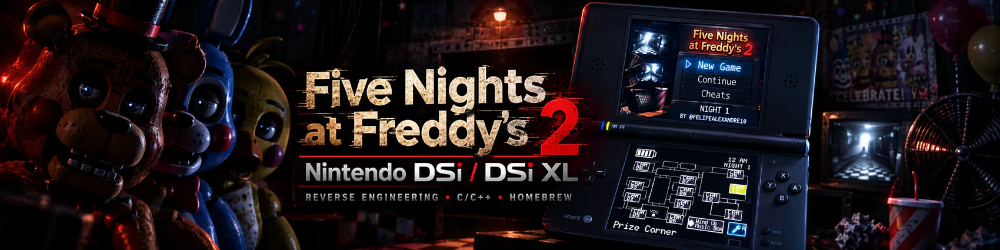
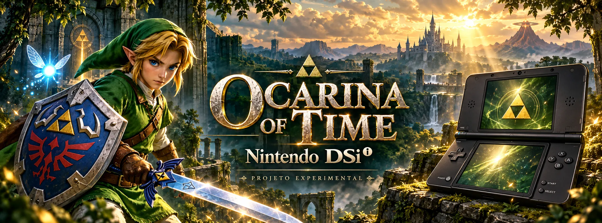

V0.11 R2 · FULL HD
V0.11 R2 · FULL HD
Stardew Valley para Wii U
Um laboratório nativo para Wii U e Cemu: a fazenda na TV, o GamePad independente e um mundo com 48 mapas, 34 NPCs, cache por região e medições reais de desempenho.
Felipe Alexandre · desenvolvedor independente
Explorando o encontro entre código, jogos e tecnologia — uma experiência de cada vez.
01 curiosidade.init()
02 ideia.explorar()
03 projeto.criar()
↳ pronto para começar
01 / O QUE ESTOU CONSTRUINDO
Experimentos que misturam engenharia reversa, jogos e novas formas de interagir com tecnologia.
V0.11 R2 · FULL HD
Um laboratório nativo para Wii U e Cemu: a fazenda na TV, o GamePad independente e um mundo com 48 mapas, 34 NPCs, cache por região e medições reais de desempenho.

ENGENHARIA REVERSAUma recriação técnica de Five Nights at Freddy’s 2 adaptada às características do DSi XL, com foco em memória, desempenho e experiência de jogo.

ARTE CONCEITUAL · IAUma investigação técnica para adaptar Ocarina of Time ao Nintendo DSi, com tradução gráfica, gerenciamento de recursos e integração gradual dos sistemas do jogo.
02 / QUEM ESTÁ POR TRÁS
Desenvolvedor de software, estudante multidisciplinar e criador de conteúdo digital.
Gosto de explorar a interseção entre programação, inteligência artificial, design de interfaces e engenharia reversa de sistemas clássicos. É nesse espaço entre o desafio técnico e a ideia improvável que meus projetos começam.
Estudo Engenharia Civil, Tecnologia da Informação e Sistemas de Desenvolvimento — e levo um pouco de cada área para o que construo. Meu objetivo é transformar conceitos complexos em experiências funcionais, criativas e com um toque de nostalgia.
03 / CONTINUE POR AQUI
Acompanhe os projetos, veja os bastidores ou simplesmente diga oi.
Encontrou um bug ou tem uma sugestão? Envie feedback ↗